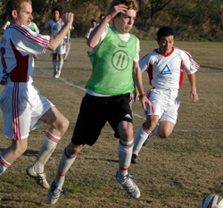
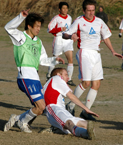
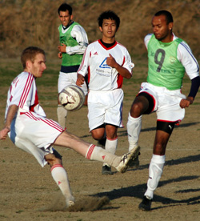
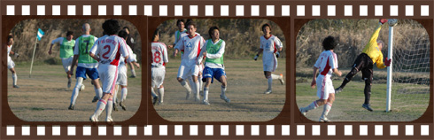

|
Misato, Sunday 9th December,
We climbed the ridge. River and green fields spread out before us. A pleasant surprise. Typically, however, we were ushered to the far corner of the vast expanse of green to a distant cabbage patch. Then we clocked the ref, decked out in grey socks -- primary school-style. Pot Pourri!
The Swiss were not the team we wanted after last week's humiliation by YCAC and with the new logo-d kit on a train somewhere BFC looked a bunch of muppets, decked out in odds and sods. Green kiddies-sized bibs completed the forlorn image.
There was a silver lining -- no Kirk, no Dave -- and the early going was all BFC, Rouven Woszlido (ze spell check does not recognise zis) powering, Bosch-like down the left and delivering all sorts of menace the champions had missed against YCAC.
Rouven's determination led to BFC's opener after 25 minutes, the left-back whipping off his Prada shades to meet a Carlos Aranda corner (BFC's fourth in a row) and in the mayhem that ensued, Dan Clarke, looking very Guti-like with string hair-band, swung his left boot to smash the ball in off the bar. Si!
Good to have the GameBoy star back after missing last week's game through suspension. Gary 'Fishman' Robertson too after his botched attempt at winkling his way into the Japanese cabinet last week via the kanji 'level three' exam.
The Swiss rarely threatened, although the 'Phil Lowes Disease' that has swept through the BFC ranks since the great doctor's departure almost gifted them a couple of opportunities to equalise. Apart from that gar nits. Thanks largely to Kirk's absence.
There was at least a little more Row Z. There had to be on this pitch. Misato clearly isn't up to TML standards -- the pitch next to the one we played on was. Begs a question, innit!
Leigh Manson, who refuses to be outdone by Clarke hairdo-wise despite being old enough to be the boy's dad, was raiding Woszildo-esque down the right and pinging in all sorts of good stuff to keep the Swiss defence on their toes.

More from the Herman the German down the left led to BFC's second, Rouven dancing into the box and cutting the ball back to Shosuke, whose right-foot shot was deflected moon-wards and came down over the Swiss keeper's dive. Very Shilton, 1990 World Cup semi-final, as Rouven would have observed.
2-0 at halftime.
Best to airbrush the second half. BFC had a player sent off for appealing for a throw-in and a goal for Clarke bizarrely waved off, apparently because the Swiss defence shouted quite loudly. Oh, and the Swiss scored one while I was in the shower.
Special mentions for Pablo Pomares, who had a fine game, and young Shawn Kee, who impressed on his return from injury. And of course, Rouven, who rushed off to play another game with 20 minutes left. Vorsprung durch Technik, as they say in Braunschweig. Bonnet de douche, as they say in Peckham.
Report by Knackered Converse

|